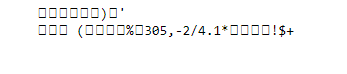
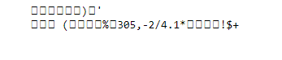

היי הצלחתי לקרוא את הפיקסלים
אבל יוצא לי משהו מוזר

יש משהו עם ה chr שאני צריך לעשות?
אם הבנתי נכון, צריך לשנות את המספר של השורה לאות
מישהו אולי יכול לעזור?

היי הצלחתי לקרוא את הפיקסלים
אבל יוצא לי משהו מוזר

יש משהו עם ה chr שאני צריך לעשות?
אם הבנתי נכון, צריך לשנות את המספר של השורה לאות
מישהו אולי יכול לעזור?
הבנת נכון, אבל כנראה שהקוד שלך לא 
תתחיל בלהדפיס (על המסך) את תוכן התמונה כדי להבין מה לעשות, משם לסנן מידע רלוונטי (תדפיס גם אותו) ואז תבצע המרות.
כן הצלחתי להדפיס על המסך את ה RGB של כל פיקסל בתמונה
הרוב היו 255 וחלק קטן היו 1 (54 ליתר דיוק)
שמרתי את המיקומים שלהם ועשיתי את העמרה לאותיות מהמיספרי שורות שלהם
אני לא מצליח לזהות את הטעות help
אם שמרת את המיקומים שלהם, אתה אמור לדעת לפענח את זה וזה באמת מוזר.
תנסה לראות מה קורה כשאתה מדפיס אות אחת. תואם למה שאתה מצפה שיהיה?
המיקומים זה דרך להגיע לתשובה אני חושש שאתה לא בודק מספיק את הדוקומנטציה של המודול נסה לבדוק איזה אופציות עומדות לרשותך שם (:
הצלחת בסוף? אני מקבלת בדיוק את אותה תוצאה ותוהה אם היא בכלל תקינה או שהטעות עוד הרבה קודם…
לא הצלחתי 
אולי עוד משהו יכול לתת רמז או עזרה ?
אני בדקתי במודולים וניסיתי עוד דברים ועדיין לא מצליח
@aviadamar @eliory09
יש לך את המיקומים, תתחיל לבדוק מה יש בהם מה הם מכילים.
אז אתה אומר שהמיקומים נכונים?
אם כך אז זה בדרך שאני ממיר אותם לאותיות?
קיצר אני די תקוע, אני עושה את מה שרשום ועדין לא מצליח
אז אני אשים פה תמונה של המיקומים שמצאתי, ואם מישהו יכול לעזור לי אני אשמח
אני לא יודע אם מצאתי את המיקומים הנכונים או שאני טועה בדרך שאני מעביר אותם לאותיות.
כמו שאמרתי קודם, מספר המיקומים נראה טוב, כמו הנקודות יש פה 54 מיקומים.
אוקי הצלחתי 
תודה לכל מי שניסה לעזור  @eliory09 @aviadamar
@eliory09 @aviadamar
@solzamir
אם יצא לך כמוני, ועדיין לא הצלחת
אז הנקודות נכונות, רק צריך למצוא אותם בסדר אחר
היי 
גם אני תקועה באותו תרגיל…
אשמח לעזרה איך הצלחת לקבל מיקום של הפיקסלים.
פתחתי את הקובץ עם התמונה, וכשאני מדפיסה אותו אני מקבלת שלשות כאלה
לא יודע מה זה השלשות האלו, אני לא הדפסתי את הקובץ עצמו
הדפסתי את המיקום של הנקודות השחורות שמצאתי
את צריך בעזרת מודול חיצוני לאתר את המיקום של הפיקסלים השחורים
המיספרים 255 ו 1 שיוצאים מהקובץ מייצגים את ה RGB של הפיקסלים(מדד לצבע)
תקראי על זה קצת אם בא לך
בכללי את צריך מודול שמאפשר לך לגשת לכל פיקסל בניפרד
אבל אם יצא לך כמו התמונה שהראתי:

זה אומר שהצלחת לאתר את מיקום הנקודות השחורות
ולהדפיס את מיספרי השורות, רק לא בסדר הנכון.
אוקיי הגעתי גם לאותה תשובה.
מה הכוונה לא הסדר הנכון?
הרי כשאני קוראת לנקודה עם ה (x,y) שמצאתי אני באמת מקבלת 1. אז למה לא נכון?
אם יצא לך ככה אז הנקודות שמצאת הן נכונות, זה טוב
אבל כנראה הרשימה שעשית של מיקומי הנקודות היא לא בסדר הנכון
ואולי גם התבלבלת בין השורות לעמודות
תנסי לשחק עם זה
הגעתי לאותם מיקומי נקודות שחורות ועדיין לא מבינה איך להגיע למסר. ניסיתי גם להסתכל על העמודות וגם על השורות ואפילו להוסיף 1 (אם במקרה הספירה מתחילה מ-1 ולא מ-0) ועדיין לא ראיתי משהו ברור. לפי הדוגמא פשוט עושים CHR למספר השורה. מה אני מפספסת?
אולי את עוברת על התמונה לפי שורות ולא עמודות? אם אני לא טועה צריך לעבור משמאל לימין ומלמעלה למטה.
הסתדרת? 20chr20chr…
אכן תודה!
עכשיו לא מצליחה להעלות את התרגיל…
{kind=link}
{kind=link}
{kind=link}